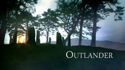

Tudo sobre Outlander
Outlander é uma série de televisão de drama e romance britânica-americana baseada na série de livros de mesmo nome da escritora americana Diana Gabaldon. Desenvolvida por Ronald D. Moore, o programa estreou em 9 de agosto de 2014 no canal Starz. A série é produzida pela Sony Pictures Television com apoio da Left Bank Pictures. É protagonizada por Caitriona Balfe e Sam Heughan.
Sinopse
Após anos separados pela Segunda Guerra Mundial, Claire viaja com seu marido Frank Randall para a Escócia. Entretanto, os dois acabam separados após Claire ser misteriosamente transportada através do tempo e mandada para 1743. Presa em uma época onde os levantes jacobitas se iniciam, ela conhece o jovem guerreiro escocês Jamie Fraser e sua vida passa a correr riscos ao conhecer Jonathan Randall, antepassado de Frank e capitão inglês.
Produção
Em julho de 2012, foi relatado que a Sony Pictures Television havia garantido os direitos da série Outlander de Diana Gabaldon, com Ronald D. Moore escalado para desenvolver o projeto e Jim Kohlberg (da Story Mining and Supply Co.) produzir. A Sony concluiu o acordo com a emissora Starz em novembro de 2012 e Moore contratou uma equipe de roteiristas em abril de 2013. Em junho, a Starz encomendou o projeto Outlander com dezesseis episódios, e em agosto foi anunciado que John Dahl estaria dirigindo os dois primeiros episódios. O CEO da Starz, Chris Albrecht, disse mais tarde que havia destacado vários projetos de gênero, incluindo Outlander, para mudar o desenvolvimento de séries da emissora por causa de "públicos que estavam sendo mal atendidos", para "impulsionar uma base fervorosa de fãs que adorariam novos programas".
Chamando de "um tipo diferente de show que nunca tinha pensado", Albrecht acreditava que a combinação de fantasia, ação, um forte romance central de Outlander e um foco feminista o diferenciaria. Outra característica distintiva do show é o uso do gaélico escocês. Àdhamh Ó Broin é o consultor de idiomas e Griogair Labhruidh cantou em gaélico na trilha sonora da segunda temporada.

Personagens
Após anos separados pela Segunda Guerra Mundial, Claire viaja com seu marido Frank Randall para a Escócia. Entretanto, os dois acabam separados após Claire ser misteriosamente transportada através do tempo e mandada para 1743. Presa em uma época onde os levantes jacobitas se iniciam, ela conhece o jovem guerreiro escocês Jamie Fraser e sua vida passa a correr riscos ao conhecer Jonathan Randall, antepassado de Frank e capitão inglês.